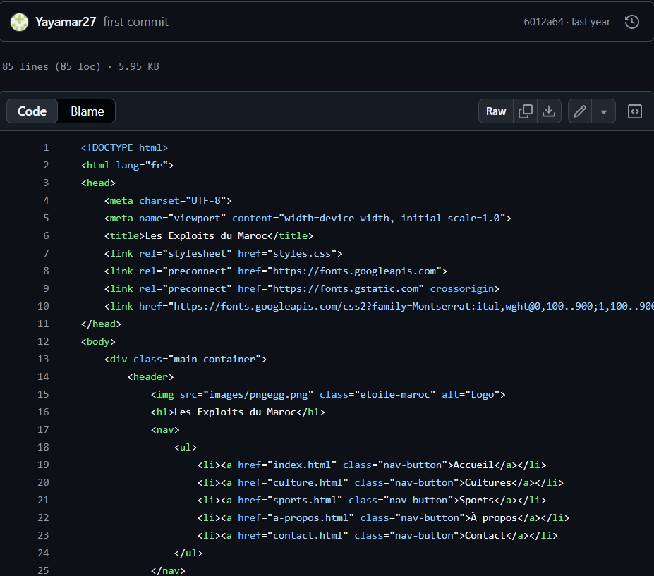

1. Contexte et objectif
Le but était de concevoir un site personnel permettant de se présenter en ligne de manière professionnelle. Il fallait donc réfléchir à la fois au contenu, à la structure du site et à sa présentation.
2. Mon rôle dans la SAÉ
J’ai assuré la conception du site, la structuration des pages, la mise en forme avec CSS et le déploiement. J’ai aussi dû réfléchir à la manière de me présenter et à ce que devait contenir une identité numérique cohérente.
3. Compétences et apprentissages critiques mobilisés
- AC13.04 : connaître l’architecture et les technologies d’un site web ;
- AC13.01 : utiliser un système informatique et ses outils ;
- AC11.02 : comprendre l’environnement numérique dans lequel s’inscrit le site.
Cette SAÉ développe surtout la compétence Créer des outils et des applications informatiques, tout en travaillant la communication numérique.
4. Tâches réalisées
- Création de la structure HTML du site ;
- Mise en forme avec CSS ;
- Organisation des contenus ;
- Réflexion sur l’image professionnelle à donner ;
- Mise en ligne sur un serveur.
5. Traces du projet
Ce lien permet d’accéder directement au site que j’ai développé dans le cadre de cette SAÉ. Il montre ma capacité à créer et déployer une interface web fonctionnelle.

Capture d’écran du code réalisé. Cette image illustre la structure, le design et l’organisation des contenus que j’ai mis en place.
6. Analyse de ma progression
Cette SAÉ a marqué mon premier vrai contact avec le développement web. J’y ai appris la différence entre structure et mise en forme, ainsi que l’importance de rendre les contenus lisibles et organisés.
7. Difficultés rencontrées
La principale difficulté a été de trouver un équilibre entre technique et présentation. Il ne suffisait pas de coder : il fallait aussi réfléchir à ce qui devait apparaître, à la manière de le hiérarchiser et à l’image renvoyée.
8. Ce que j’ai mis en place pour les surmonter
J’ai procédé par étapes : d’abord la structure, ensuite le style, puis l’amélioration progressive du rendu. Cela m’a permis d’avancer sans me perdre et de mieux comprendre la logique d’un projet web.
9. Autoévaluation
Cette SAÉ m’a permis d’obtenir de bonnes bases en HTML et CSS. Je suis aujourd’hui plus à l’aise pour construire une interface simple et claire. Je dois encore progresser sur les aspects plus avancés du web, mais cette première expérience a été essentielle.
10. Réinvestissement possible
Les compétences développées ici sont réutilisables pour un portfolio, une interface d’administration ou tout projet nécessitant une présentation web claire et structurée.